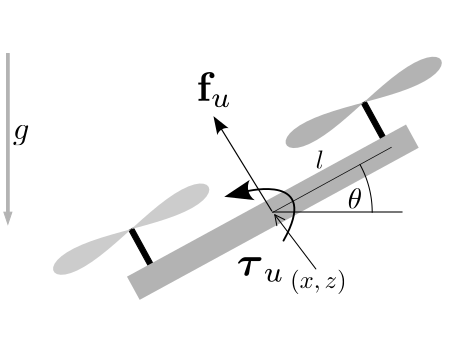
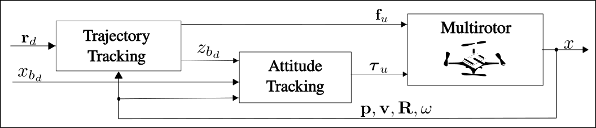
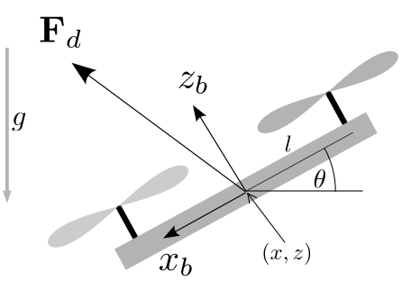
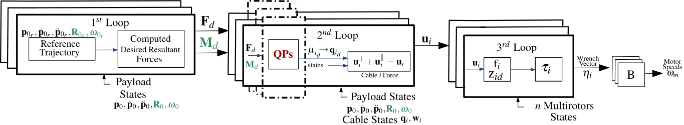

Flying Robots
Controllers
Khaled Wahba
November 22, 2024
Assignment 1.5
Feedback or Questions
Any questions or issues?
More in-lab hours next week needed?
Role of github copilot (or similar) for development?
(Geometric) Multirotor Control
Outline
Multirotor Control History
- Challenges
Geometric Control
1D, 2D, 3D Multirotor Control
Controller Stability
Multirotor Control History
- Near-hover linear controllers (PD, LQR) (Valenti et al. 2006),(Hoffmann et al. 2007)
- Nonlinear Controllers:
- Dynamic Feedback Linearization (DFL) (Mellinger 2012)
- Backstepping and Sliding Mode Controllers (Bouabdallah and Siegwart 2005)
- Geometric Controllers (Lee, Leok, and McClamroch 2010a)
- Reinforcement Learning (\(\approx 2018\))
- Model Predictive Control (\(\approx 2020\))
LQR Example
Challenges
- These controllers are based on Euler angles representations
(small angle assumption) - They exhibit singularities in complex rotational maneuvers
Small Angle Assumption for 2D Multirotor (Mellinger 2012)
- \(e_p\) and \(e_d\) are position and velocity error vectors
- \(k_p, k_d, k_{\theta}, k_{\omega} > 0\), positive constant gains
\(f = \frac{m}{\cos(\theta)} + \mathbf{g} +
k_p e_p + k_d e_d\)
\(\boldsymbol{\tau_z} = k_{\theta}(\theta_d -
\theta) + k_{\omega}(\dot{\theta_d} - \dot{\theta})\)

- if \(\theta=\pi/2\) then \(f = \infty\)
Large Angle Assumption
More details in (Mellinger 2012) to see the
problems when using
Euler angles representations
Flipping Example
Geometric Control
Why “Geometric”?
- Control of dynamic systems:
- evolve on nonlinear manifolds
- cannot be globally identified by Euclidean metrics
(i.e. \(SE(3)=\mathbb{R}^3 \times SO(3)\))
- Geometric control adopt the geometric properties of the manifolds and provide insights to control theory
- already been done for fully actuated rigid bodies (Bullo and Lewis 2019)
recall: quadrotors are underactuated systems!
Controllers
1D Multirotor
- State: \(\mathbf{x} = (z, \dot z)^\top \in
\mathbb R^2\)
- Height \(z\) [m]
- Vertical velocity \(\dot z\) [m/s]
- Action: \(\mathbf{u} = (f_1) \in \mathbb
R\)
- Upward thrust \(f_1\) [N]
- Parameters
- Mass \(m\) [kg], Gravity \(g\) [\(m/s^2\)]
- Dynamics: \[ \begin{align} \mathbf{\dot x} = f(\mathbf x, \mathbf u) = \begin{pmatrix} \dot z\\ \frac{f_1}{m} - g \end{pmatrix} \end{align} \]

1D Multirotor Controller
- Reference trajectory tuple: \((\ddot{z}_d, \dot{z}_d, z_d)\)
- Position and velocity errors
\(e_p = z_d - z\), \(e_d = \dot{z}_d - \dot{z}\)
- PD controller + gravity compensation
\(f_1 = m(\ddot{z}_d + k_pe_p + k_de_d + g)\), \(\quad\forall k_p, k_d > 0\)
2D/3D Multirotor Dynamics
- Dynamics: \[ \begin{align} &\dot{\mathbf{p}} = \mathbf{v}, && m\mathbf{\dot{v}} = m\mathbf{g} + \mathbf{R}\mathbf{f}_u,\\ &\dot{\mathbf{R}} = \mathbf{R}\boldsymbol{\hat{\omega}}, && \mathbf{J}\dot{\boldsymbol{\omega}} = \mathbf{J}\boldsymbol{\omega}\times \boldsymbol{\omega} + \boldsymbol{\tau}_u, \end{align} \]

2D Multirotor
- \(\mathbf{p} \in \mathbb R^{2}\)
- \(\mathbf{R} \in SO(2)\), \(\hat{\boldsymbol{\cdot}}:\) \(\mathbb R^2 \rightarrow SO(2)\)
- Angular velocity \(w \in \mathbb R^{1}\)
- \(\mathbf{u} = (f_1, f_2) \in \mathbb R^2\)
- \(f_u = [0,f]^T\)
- \(\tau_u \in \mathbb R^1\)
3D Multirotor
- \(\mathbf{p} \in \mathbb R^{3}\)
- \(\mathbf{R} \in SO(3)\), \(\hat{\boldsymbol{\cdot}}:\) \(\mathbb R^3 \rightarrow SO(3)\)
- Angular velocity \(w \in \mathbb R^{3}\)
- \(\mathbf{u} = (f_1, f_2, f_3, f_4) \in \mathbb R^4\)
- \(f_u = [0,0,f]^T\)
- \(\tau_u \in \mathbb R^3\)
2D/3D Multirotor Controller (Lee, Leok, and McClamroch 2010a)
 Control Structure
Trajectory Tracking Controller
- Reference trajectory tuple: \(\mathbf{r}_d = (\dddot{\mathbf{p}}_d(t), \ddot{\mathbf{p}}_d(t), \dot{\mathbf{p}}_d(t), \mathbf{p}_d(t))\)
- Position and velocity errors \(\mathbf{e}_p = \mathbf{p}_d - \mathbf{p}\), \(\mathbf{e}_d = \dot{\mathbf{p}}_d - \dot{\mathbf{p}}\)
- Trajectory tracking controller: PD + gravity compensation
\(\mathbf{F}_d = m(\ddot{\mathbf{p}}_d + \mathbf{K}_p \mathbf{e}_p + \mathbf{K}_v \mathbf{e}_v + \mathbf{g})\)
\(f = \mathbf{F}_d \cdot \mathbf{R}e_3\)
where \(\mathbf{K}_p, \mathbf{K}_v \in \mathbb R^{3\times 3}\) are positive definite diagonal gain matrices
Attitude Tracking Controller
We need to define a desired rotation \(\mathbf{R}_d\) that
can align \(z_b\) with \(\mathbf{F}_d\)
\(\mathbf{R}_d = [x_{b_d}\quad y_{b_d}\quad
z_{b_d}]\)

Attitude Tracking Controller
Define \(\mathbf{x}_{b_d} = [\cos(\psi) \quad \sin(\psi) \quad 0]^T\) (e.g., \(\psi = 0\))
\(\mathbf{z}_{b_d} = \text{normalize}(\mathbf{F}_d)\)
\(\mathbf{y}_{b_d} = \frac{\mathbf{z}_{b_d} \times \mathbf{x}_{b_d}}{\|\mathbf{z}_{b_d} \times \mathbf{x}_{b_d}\|}\)
\(\mathbf{R}_d = \begin{bmatrix} \mathbf{y}_{b_d} \times \mathbf{z}_{b_d} & \mathbf{y}_{b_d} & \mathbf{z}_{b_d} \end{bmatrix} \in SO(3)\)
Attitude Tracking Controller (Lee, Leok, and McClamroch 2010a)
\(\mathbf{\tau}_u = -\mathbf{K}_R \mathbf{e}_R - \mathbf{K}_\omega \mathbf{e}_\omega + \omega \times \mathbf{J} \omega - \mathbf{J} (\hat{\omega} \mathbf{R}^T \mathbf{R}_d \omega_d - \mathbf{R}^T \mathbf{R}_d \dot{\omega}_d)\)
- How to compute \(\tau_u\)?
- Define an error metric on \(SO(3)\)
\(\Psi(\mathbf{R}, \mathbf{R}_d) = \frac{1}{2} \text{tr}(\mathbf{I} - \mathbf{R}^T \mathbf{R}_d)\)
- From this, you can derive the orientation error
\(\mathbf{e}_R = \frac{1}{2} \left( \mathbf{R}^T_d \mathbf{R} - \mathbf{R}^T \mathbf{R}_d \right)^\vee\), \((\cdot)^\vee\): \(SO(3) \rightarrow \mathbb R^3\)
- angular velocity error: computed from \(\dot{\mathbf{R}}\) and \(\dot{\mathbf{R}}_d\) (indirectly)
\(\mathbf{e}_\omega = \omega - \mathbf{R}^T \mathbf{R}_d \omega_d\)
Control Law
\(f = m(\ddot{\mathbf{p}}_d + \mathbf{K}_p \mathbf{e}_p + \mathbf{K}_v \mathbf{e}_v + \mathbf{g}) \cdot \mathbf{R} \mathbf{e}_3\)
\(\mathbf{\tau}_u = -\mathbf{K}_R \mathbf{e}_R - \mathbf{K}_\omega \mathbf{e}_\omega + \omega \times \mathbf{J} \omega - \mathbf{J} (\hat{\omega} \mathbf{R}^T \mathbf{R}_d \omega_d - \mathbf{R}^T \mathbf{R}_d \dot{\omega}_d)\)
- How to compute \(\omega_d\) and \(\dot{\omega}_d\)?
Desired Angular States (Mellinger and Kumar 2011)
\(\mathbf{h}_\omega = \frac{m}{f} (\dddot{\mathbf{p}_d} - (\mathbf{z}_{b_d} \cdot \dddot{\mathbf{p}_d})\mathbf{z}_{b_d})\), \(\quad \mathbf{e}_3 = [0,0,1]^T\)
\(\omega_{x_d} = -\mathbf{h}_\omega \cdot \mathbf{y}_{b_d}, \quad \omega_{y_d} = \mathbf{h}_\omega \cdot \mathbf{x}_{b_d}, \quad \omega_{z_d} = \dot{\psi}\mathbf{e}_{3}\cdot\mathbf{z}_{b_d}\)
- For \(\dot{\omega}_d\), compute the analytical derivative of \(\omega_d\) w.r.t time.
- Will be revisited in the motion planning part
Controller Stability Properties
Lyapunov stability analysis
Proof is in the appendix (Lee, Leok, and McClamroch 2010b)
The dynamics are exponentially stable, when the initial conditions satisfy two conditions:
\(\Psi (\mathbf{R}, \mathbf{R}_d) < 2\)
\(\|\mathbf{e}_\omega\|^2 < \frac{2}{\lambda_{\text{max}}(\mathbf J)} k_R (2 - \Psi (\mathbf{R}, \mathbf{R}_d))\),
- where \(\lambda_{\text{max}}(\mathbf J)\) is the maximum eigenvalue of the inertia matrix
- \(k_R\) is the minimum value in the \(\mathbf{K}_R\in \mathbb R^{3\times 3}\) gain diagonal matrix.
Advanced Topics
Nonlinear MPC
- At a fixed frequency, solve an optimal control problem
\[ \begin{aligned} \arg\min_{\mathbf u} \|\mathbf x_N - \mathbf x_{N_d}\| + \sum_{k=0}^{N-1} \left( \|\mathbf x_k - \mathbf x_{k_d}\| + \|\mathbf u_k - \mathbf u_{k_d}\| \right) s.t.\newline \mathbf x_0 = \text{current state}\\ \mathbf x_{k+1} = \text{step}(\mathbf x_{k}, \mathbf u_{k})\\ \text{actuation and state bounds} \end{aligned} \]
- Execute first action and repeat
Example (Foehn, Romero, and Scaramuzza 2021)
RL
- Use a simulator to train a policy
- Input: state
- Output: motor RPM, desired force/torque, or attitude setpoint
- For sim-to-real transfer use domain randomization
- Sample different inertia and physical parameters
- Potentially add (motor) delays
Example (Molchanov et al. 2019)
Controller Comparison (Sun et al., n.d.)
- Geometric controllers and NMPC have similar performance if reference is valid
- NMPC handles invalid trajectories better
- For both, more advanced attitude controllers are important
- Incremental nonlinear dynamic inversion (INDI) (uses IMU rather than model)
- QP-based control allocation
- RL has no (stability) guarantees, but works best in drone racing
Payload Transport
3 Crazyflies transporting a triangular payload with cables
Payload Transport

Hierarchical control structure multiple UAVs transporting a
payload
Assignment 2
Task
Implement the Lee geometric controller for the Bitcraze Crazyflie 2.1 robot. Test and tune in your simulator (Assignment 1). Execute physical test flights with your controller and report the tracking errors.
Simulation
- The output of the controller is essentially \(\eta\); avoid using PWM conversion altogether
- For working gains (and other inspiration), see the Lee controller in the firmware
Testing steps:
- Start with a step response (i.e., slight change in position, zero for derivatives)
- Test with a circle trajectory in the \(xy\)-plane
- Add support for csv-file setpoints
- Tune the gains with the goal to minimize the cumulative position error on the figure-8 trajectory
Physical Flight
- Be careful with the units - the gyro is deg/s in the firmware
Steps:
- Prepare the bindings using `bindgen’
- Add your controller code, make sure to switch to
f32and switch from std to core - Try flying with cfclient, similar to the initial demo
- Use the uSD-card deck to log flight data
- Report the cumulative position error for the figure-8 trajectory (you can run it via an official example script)
Conclusion
Learned Today
- Multirotor controllers
- Linearized controllers, geometric controllers, nonlinear MPC, RL
- Details of the state-of-the-art geometric controller
- Assignment 2
Next 3.75 Weeks
- Discussion for Assignment 2.
- Presentations of simulation (not graded).
- Discussions and flight demos (2 weeks).
Questions
?